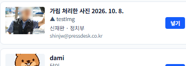
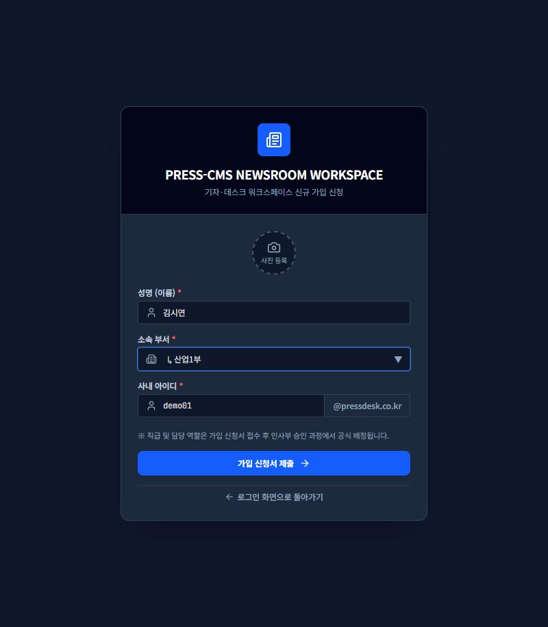
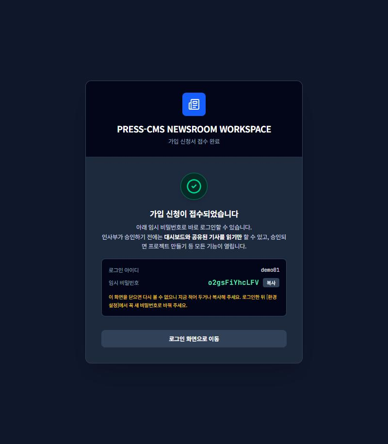
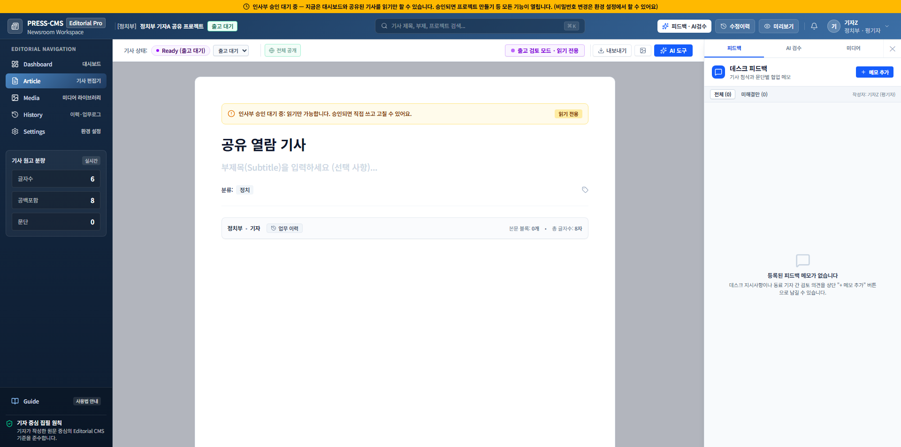
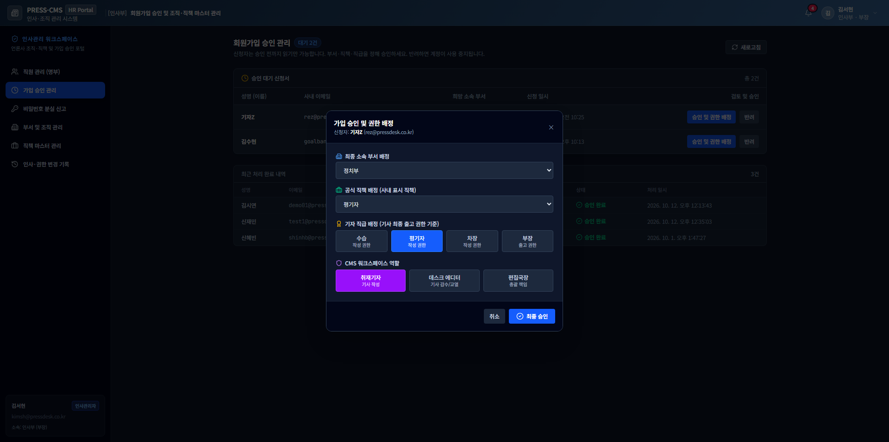
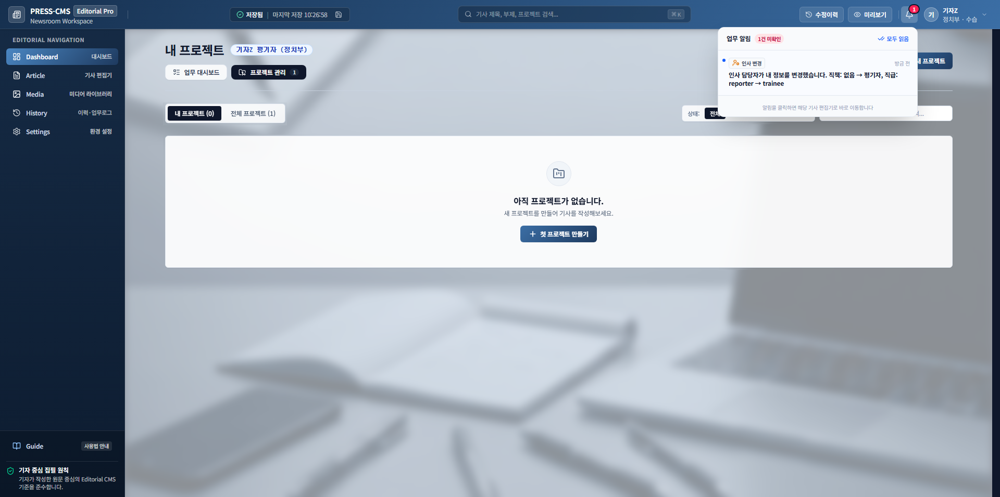
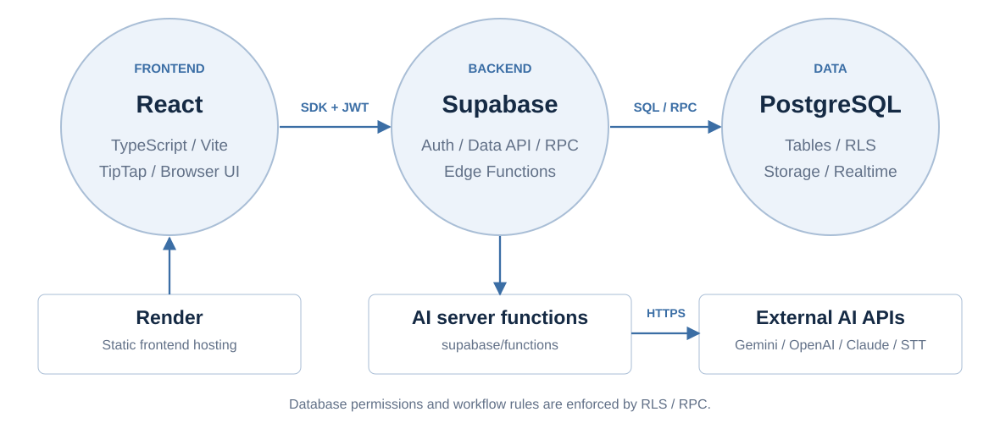
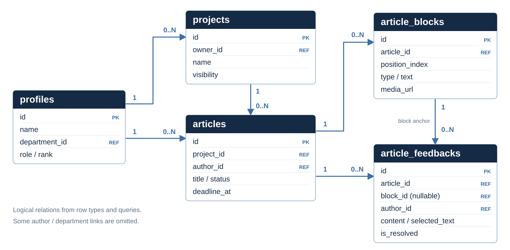
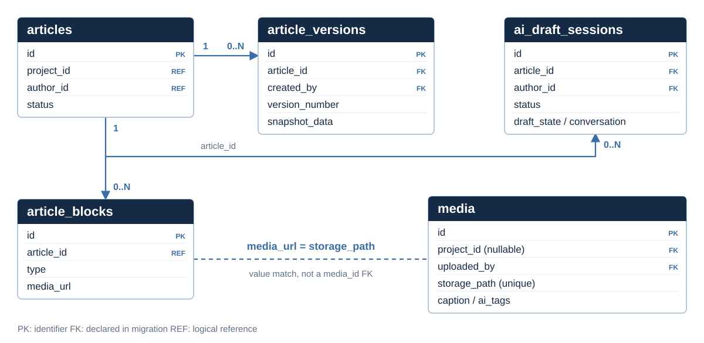

김수현
- 기자 피드백 해석과 편집 화면 개선 방향 제안
- 협업용 GitHub 저장소 구성, Render 배포·V2 갱신
- 프로젝트 작업일지 작성, HTML 발표자료 제작·통합
총 45장 · 마지막에 실제 사이트를 직접 시연합니다.
A조 · PRESS-CMS | 기자가 자료와 원고, 검토 의견을 한곳에서 다루도록 만듭니다.
협업 방식 Slack으로 요구사항·오류·피드백을 공유하고, 코드와 개발 기록을 전달해 수정·배포·발표를 이어갔습니다.
문단마다 나뉜 입력 칸은 긴 글을 이어 쓰기 어렵게 했습니다.
사진을 다시 찾고 캡션과 바이라인을 옮기는 작업이 필요했습니다.
어느 문장을 고쳐야 하는지, 다음 검토자가 누구인지 확인해야 했습니다.
개발 배경: 9/30·10/8 현장 피드백과 팀 개발 기록을 요약했습니다.
만든 범위를 실제 숫자로 정리했습니다.
기자 · 데스크 · 부장 · 인사부
초안 · 검수 · 인포그래픽
하위 부서 포함 계층 구조
인사부가 관리
검토 요청부터 인사 관리까지
발표 속 모든 화면은 실제 캡처
9/30 · 10/8 · 1차 발표 의견
원인 분류 → 배운 점
출처: 팀 발표자료(1012)와 개발 기록. ‘처리’는 반영·기능 추가·유지를 모두 포함합니다(04장 참고).
기사 작업을 중심으로 기자, 데스크, 인사부의 업무를 연결합니다.
작성자와 검토자가 같은 원고를 기준으로 작업합니다.
기자가 본문과
사진을 편집
같은 부서
데스크에 전달
문장을 지정해
수정 의견 작성
데스크가
원고를 확인
부장이
최종 처리
수정 요청을 받은 기자는 고쳐서 재검토를 요청합니다. 의견은 문장 위에 색깔로 남습니다.
AI는 초안을 돕는 도구일 뿐, 사실 확인과 최종 판단은 기자의 몫입니다. ‘출고’는 CMS 안의 상태 변경이며 외부 송고 시스템 연동은 포함하지 않습니다.
매주 작성한 개발 기록(DEV_LOG)을 기준으로 정리한 일정입니다.
여러 입력 칸을 하나의
문서 편집기로 바꿨습니다.
놓을 자리에 파란 선 표시
글 사이·글자 중간 어디든
글 나누기 + 사진 넣기
사진을 포함한 DOCX·TXT 내보내기 지원. 화면은 하나의 문서, 저장은 기존 블록 구조를 유지합니다.

① 확대글 중간에 사진을 넣어도 글이 사라지지 않는 이유: 중간 상태가 생기지 않도록 서버가 한 번에 처리합니다. 구현: BodyEditor.tsx · bodySyncService.ts · docxExport.ts
기사에 넣으면 캡션·출처도 함께 들어갑니다.
영상은 업로드와 본문 삽입을 지원합니다. 영상 내용 분석·자동 편집은 하지 않습니다.
선택한 문장과 검토 의견을 색깔로 직접 연결합니다.
현재 제한: 여러 문단을 가로지르는 선택 피드백은 지원하지 않습니다.
원고 작성과 검토 요청
같은 부서 기사 검토·수정 요청·승인
출고 대기 기사 최종 출고 · 본문 잠금 상태로 검토
공유 설정과 관계없이 출고 대기 기사는 부장에게 자동으로 보입니다. 본문은 잠기지만 글을 드래그해 의견은 남길 수 있습니다. 자신이 쓴 기사는 스스로 승인할 수 없습니다.
| 업무 | 기자(작성자) | 데스크(부장·차장) | 부장 | 인사부 관리자 |
|---|---|---|---|---|
| 검토 요청 | ✔본인 기사 | – | – | – |
| 수정 요청 | ✔요청 가능 | ✔같은 부서 · 검토중 · 사유 필수 | ✔ | – |
| 승인 (출고 대기로) | – | ✔같은 부서 · 본인 기사 제외 | ✔ | – |
| 최종 출고 | – | – | ✔출고 대기 기사 | – |
| 기사 배정 · 마감 변경 | – | ✔같은 부서 기자에게만 | ✔ | – |
| 가입 승인 · 직원 · 부서 관리 | – | – | – | ✔ |
기사 업무 ↔ 인사 업무 완전 분리인사부는 사람과 조직만 관리하고, 기사 업무는 할 수 없습니다.
○대시보드 · 공유된 기사 읽기
×만들기 · 수정 · 출고 (누르면 안내 문구)
○“승인 대기 · 읽기 전용” 표시가 화면 위에 항상 보임
| 위치 | 누가 바꿀 수 있나 |
|---|---|
| user_metadata이름·부서 같은 일반 정보 | 본인도 가능 |
| app_metadata승인 상태(approval) | 서버만 가능 |
스스로 “승인됐어”라고 고칠 수 없는 자리에 둡니다.
읽기 전용 제한은 화면에서 막고 있고, 서버 쪽 제한은 11월 11일까지 보강합니다.





버전 기록으로 되짚고,
알림으로 다음 할 일을 이어갑니다.
삭제한 사실도 기록으로 남습니다. 구현: articleVersionService.ts · VersionHistoryModal.tsx · NotificationCenter.tsx
편집기 옆에 AI 도구 3가지를 모았습니다.
주제와 취재 자료를 넣고 질문에 답하면 초안을 구성합니다. 기자가 확인한 뒤 본문에 적용합니다.
AI 키는 각자 계정에 암호로 보관하고 화면에는 뒤 몇 글자만 보입니다. 검수 엄격도는 엄격·표준·완화 3단계. 근거 표시는 입력 자료와의 글자·숫자 비교이며 사실 검증을 보장하지 않습니다.
외부 생성형 AI에 업무별 지침과 자료를 전달하고, 구조화된 결과를 편집기에서 확인합니다.
| 기능 | 입력 | AI 처리와 결과 | 기자가 확인할 부분 |
|---|---|---|---|
| 원자료 정리 | 보도자료·취재 메모·표 | 요약, 핵심 사실, 수치, 인용, 시간순 사건, 추가 질문으로 분류 | 원문과 수치·인용 대조 |
| 질문형 초안 | 주제·초기 자료·기자의 답변 | 5W1H에서 빠진 정보를 질문 → 답변 누적 → 제목·리드·본문 구성. 일부 문단 재생성·수정 지시 지원 | 없는 사실을 보충하지 않았는지 확인하고 본문에 적용 |
| 기사 검수 | 제목·본문·기사 표기 지침 | 주어·서술어 호응, 누락·중의문, 제목과 본문의 차이, 영문·국가명·수치 표기를 점검. 이유와 수정 예시 제안 | 원문 위치에서 제안 적용·무시·확인 완료 선택 |
구현: organize-raw-data · ai-interview-draft · review-article-content. 검수 결과는 사실 확정이 아니며, 최종 수정·출고 판단은 사람이 합니다.
| 기능 | AI가 하는 일 | 프로그램이 하는 일 | 현재 확인 범위 |
|---|---|---|---|
| 인포그래픽 | 본문의 비교 가능한 수치·항목·단위를 JSON으로 추출 | 원문 수치 포함 여부 검사, 막대·원형 등 차트 렌더링·삽입 | 화면·코드 확인 추출 실패 시 로컬 대체 경로 |
| 사진 분석 | 사진의 분류·검색 태그·캡션 후보 생성 | 결과 형식 검사 후 미디어 메타데이터 저장 | 개발 기록에 Gemini 시험 결과 모델 변경 시 재검증 |
| 녹음 받아쓰기 | 음성을 글로 변환, 선택한 엔진·모드에서 화자 구분 시도 | 취재 메모에 반영, 화자 이름 수정 지원 | Gemini / OpenAI / Google Cloud 후자 두 엔진은 실제 키 시험 필요 |
| 이미지 생성 | 설명 문장으로 삽화 생성 | 미디어에 등록할 때 ‘AI 생성’ 출처·캡션 표시 | 화면·서버 경로 구현 기본 모델 교체·호출 검증 필요 |
AI 호출이 없는 부분 URL의 본문 가져오기, 기존 근거의 문자열·수치 비교, 차트 그리기는 일반 프로그램 로직입니다.
구현: extract-infographic-data · analyze-media-image · transcribe-audio · generate-image. 영상은 업로드·삽입만 지원합니다.
AI가 마음대로 쓰지 못하도록, 지켜야 할 약속을 먼저 정하고 단계마다 할 일을 따로 시킵니다.
[절대 준수 원칙]
1. 기자가 답변하지 않은 사실을
절대 상상하거나 지어내지 마라.
2. 모든 문장·수치·인용은 기자의 입력에서
직접 근거를 찾을 수 있어야 한다.
3. 근거가 없으면 문장으로 날조하지 말고
"[확인 필요: ○○]" 로 남겨라.
4. 질문은 한 번에 1~2개만 하고,
이미 답한 항목은 다시 묻지 마라.쉽게 말하면 “모르는 건 모른다고 표시하고, 기자에게 되물어라”는 약속입니다.
기본값은 Gemini 3.8 Flash이고, 설정 화면에서 회사와 모델을 바꿀 수 있습니다.
| 기능 | 사용하는 모델 | 알아둘 점 |
|---|---|---|
| 글 작업초안 · 검수 · 사진 분석 · 인포그래픽 · 자료 정리 | Gemini 3.8 Flash (기본) | 초안 · 검수 · 사진 분석은 모델을 따로 고를 수 있습니다. |
| 녹음 받아쓰기 | Google Chirp 3 · Gemini 3.8 Flash · OpenAI whisper-1 | 인터뷰 모드에서는 말한 사람 구분을 먼저 시도합니다. |
| 이미지 만들기 | Gemini 2.5 Flash Image · OpenAI 이미지 모델 | OpenAI는 종료되는 옛 모델 대신 후속 모델로 바꿨고, 시험이 남았습니다. Claude와 사내 API로는 만들 수 없습니다. |
※ 종료가 예정된 모델은 선택 목록에서 지웠습니다. 각 회사의 공식 안내(2026-10-13 확인) 기준입니다.
우리 프로젝트는 11월 11일 최종 발표로 끝납니다. 그 전에 닿는 일정만 정리했습니다.
※ 날짜는 각 회사가 공개한 가장 빠른 종료일 기준이며 바뀔 수 있습니다.
정해진 요금표가 아니라, 고른 모델과 AI가 읽고 쓴 글의 양에 따라 달라집니다.
| AI를 한 번 부를 때 | 읽는 양 / 쓰는 양 (가정) | Gemini 3.8 Flash | GPT-4o |
|---|---|---|---|
| 자료 정리 | 6,000 / 1,000 | 약 12원 | 약 35원 |
| 질문·답변 1회 | 4,000 / 600 | 약 7원 | 약 22원 |
| 초안 만들기 1회 | 8,000 / 2,000 | 약 19원 | 약 56원 |
| 기사 검수 | 7,000 / 1,200 | 약 14원 | 약 41원 |
| 인포그래픽 숫자 뽑기 | 3,000 / 400 | 약 5원 | 약 16원 |
| 사진 분석 | 1,500 / 300 | 약 3원 | 약 9원 |
※ 환율 1달러=1,400원 가정. 무료 한도·할인·세금·서버 운영비는 뺐고, 재시도하면 더 들 수 있습니다. 실제 청구 금액과 오차가 있을 수 있습니다. (2026-10-13 각 회사 공식 요금표 확인)
| 기능 · 모델 | 계산 조건 | 예상 요금 | 적용 상태 |
|---|---|---|---|
| 일반 받아쓰기OpenAI whisper-1 | 30분 × 분당 $0.006 | 약 252원≈ $0.18 | 일반 받아쓰기 기본값입니다. 말한 사람 구분 모드는 다른 모델을 씁니다. |
| 받아쓰기Google Cloud STT | 30분 × 분당 $0.016 | 약 672원≈ $0.48 | 연결은 되어 있고, 실제 계정으로 시험이 더 필요합니다. |
| 이미지 만들기Gemini 3.1 Flash Image | 1장 (1K 크기) | 약 94원≈ $0.067 | 바꿔 쓸 후보입니다. 지금 기본값과 다릅니다. |
| 이미지 만들기OpenAI gpt-image-1 | 1장 (1024×1024), 낮음 / 보통 / 높음 | 약 15 / 59 / 234원≈ $0.011 / 0.042 / 0.167 | 화질을 지정하지 않고 있고, 공식 문서에서 곧 사라질 모델로 안내합니다. |
※ 환율 1달러=1,400원 가정. 세금·할인·서버 운영비 제외. 실제 청구 금액과 오차가 있을 수 있습니다. Gemini 받아쓰기는 분당 요금이 없어 계산하지 않았습니다. (2026-10-13 확인)
실제로 사용한 도구입니다. 버전은 프로젝트 설정 파일 기준입니다.

src/components편집기·대시보드·인사 화면src/servicesAPI 호출·저장·DB 행 변환supabase/functions · migrationsAI 요청 처리·테이블·권한·RPCReact·TypeScript·Vite·TipTap + Supabase 기반입니다. Render는 프론트엔드 정적 파일을 배포하며, AI API 비밀키는 서버에서 읽어 외부 서비스를 호출합니다.
왼쪽 메뉴 여섯 개에서 시작해, 역할에 따라 보이는 화면이 달라집니다.
※ 화면 사진 34장은 화면 설계서(산출물/04)에 정리했습니다.
화면에서 서버로 보내는 요청의 목록입니다. 비밀 키가 필요한 일은 모두 서버 안에서만 처리합니다.
※ 인사부 계정은 AI 기능을 쓸 수 없습니다(요청이 거부됩니다). 자세한 요청·응답 항목은 산출물 폴더의 “API 명세서”에 있습니다.
기사 번호만 서버로 보냅니다. 중복 클릭과 연속 실행은 화면에서 막습니다.
aiReviewService.ts서버 함수가 “누가 보낸 요청인지” 먼저 확인합니다.
Supabase 로그인화면이 보낸 글이 아니라, 저장소에 있는 제목·문단을 서버가 직접 읽습니다.
article_blocks암호로 보관된 내 키를 풀어, 고른 회사·모델에 지시문과 기사를 보냅니다.
Gemini · OpenAI · Claude답이 약속한 형식인지, 지적한 문단이 실제로 있는지 확인하고 호출 기록을 남깁니다.
ai_call_logs지적 목록을 보여 주고, 적용 여부는 기자가 정합니다. 자동으로 고치지 않습니다.
기자가 결정프로젝트에 기사를 두고, 본문 블록과 피드백을 기사에 연결합니다.

PK 식별자 REF 논리 참조 필드 1 → 0..N 한 항목에 여러 하위 항목 · 선택한 본문 블록은 피드백의 block_id로 연결
근거: services/mappers.ts · projectService.ts · articleBlockService.ts · feedbackService.ts 및 SQL 조회문. 논리 ERD이며 운영 DB 전체 스키마 덤프는 아닙니다.
기사 본문, 과거 버전, AI 대화 상태를 분리해 저장합니다.

파일은 Storage에 media에는 파일 경로와 캡션·태그를 저장합니다. 프로젝트 없는 공용 미디어도 허용합니다.
미디어 사용은 경로로 추적 article_blocks.media_url = media.storage_path. 별도의 media_id 외래키로 표시하지 않았습니다.
관계 근거: article_versions·ai_draft_sessions 생성 SQL, get_media_article_usages RPC, media_library_without_project 변경 SQL. 사용자·알림·감사·AI 키/설정 등 보조 관계는 생략했습니다.
새 편집 경험을 만들면서
기존 데이터 구조를 유지했습니다.
공책 한 권을 쓰지만, 보관할 땐 쪽마다 따로 끼워 두는 것과 같습니다. 덕분에 빠르고, 다른 사람이 쓴 칸을 덮어쓰지 않습니다. 입력을 멈추고 0.8초 뒤 자동 저장되며, 실패하면 다시 시도합니다.
bodySyncService.tsconst { error } = await supabase.rpc(
'request_article_review', {
p_article_id: articleId,
}
);서버에서 작성자와 현재 상태를 확인하고 검토 단계로 바꿉니다.
articleWorkflowService.ts · 실제 코드 발췌버튼을 숨기는 건 편의일 뿐, 진짜 문은 데이터베이스가 잠급니다.
화면은 버튼을 숨길 수만 있습니다. 숨겨도 요청을 직접 보내면 우회할 수 있습니다.
IF NOT (created_by = v_uid OR author_id = v_uid OR owner_id = v_uid)
THEN RAISE EXCEPTION '본인 것만'IF status = 'published'
THEN RAISE EXCEPTION '출고 완료'두 가지 검사를 모두 통과해야만 지워지고, 지운 기록이 남습니다.
가입 버튼을 누르면 “처리하지 못했습니다”
“직책” 칸이 비어 있었음
기본값 “평기자”를 함께 보냄
로그의 “null value in column role_title” 한 줄로 원인을 바로 찾았습니다.
화면·서버·저장소가 쓰는 이름 맞추기 (예: is_active ↔ isActive, Ready ↔ ready)
오류 한 줄이 원인을 알려 줌. 추측은 더 오래 걸림
버튼 숨김으로는 부족, 저장소가 최종 문을 잠금
| 분류 | 건수 | 정리한 사례 |
|---|---|---|
| 이름·값 불일치 | 6 | 부서 활성 상태 이름, 승인 호출자 id, 사진 저장 경로, 프로젝트 요청 항목, Ready/ready, 목록 조회 관계 이름 |
| 필수값 누락 | 1 | 가입 신청의 기본 직책 누락 |
| 동시 처리 | 1 | 글 중간에 사진을 넣으면 글이 사라짐 |
| 조건 설계 | 1 | 출고 대기 목록의 본인 기사 제외 조건 |
| 배포 실수 | 1 | 옛 버전 SQL 실행으로 알림 미수신 |
| 화면 모양 | 1 | 좁은 버튼에서 글자 줄바꿈 |
팀이 정리한 대표 사례 3건 + 추가 사례 8건 기준. 전체 결함 통계나 운영 성능 측정값이 아닙니다. 비율은 11건 대비 반올림 값.
| 시험표 36개 · 현재 시험 중 | 개수 | 확인할 내용 | 결과 |
|---|---|---|---|
| AI 초안 | 6 | 질문 · 톤별 초안 · 빈 항목은 “확인 필요” | 정상 |
| 자료 정리 | 9 | 파일 읽기 · 숫자와 발언 대조 · 숨은 지시 무시 | 정상 |
| 수정 지시 | 6 | 짧게 · 쉽게 · 없는 사실 넣기 거절 | 진행 중 |
| 보안·안정성 | 6 | 키 없음 · 틀린 키 · 인사부 차단 · 권한 없는 기사 | 정상 |
| 웹·녹음·이미지 | 7 | 내부 주소 차단 · 큰 파일 · 실존 인물 그림 금지 | 진행 중 |
| 사용 기록·송고 안내 | 2 | AI 사용 현황 표 · AI 사용 안내 문구 | 정상 |
※ 현재 시험을 진행하고 있습니다. 끝난 항목부터 결과를 기록합니다.
요청은 칭찬 한 줄이었지만 3가지를 더 만들었습니다.
저장 공간만이 아니라 출처까지 자동으로 붙게 했습니다.
근거: 9/30·10/8 현장 피드백, 1차 발표 의견, 10/12 개발 기록. AI 검수 2건은 코드에 반영했고 실제 배포 환경에서 추가 확인이 필요합니다.
확인할 문장을 고르면, 관련 자료와 근거를 문장 옆에 보여 주는 기능입니다. 제안 · 아직 구현 안 됨
작업 시간 단축 효과는 측정하지 않았습니다.
※ 문서는 산출물 폴더(“산출물/”)에 있습니다. 최종 보고서는 별도로 제출합니다.
PRESS-CMS
자료와 편집, 검토를 하나의 흐름으로 연결했습니다.
감사합니다. 질문을 받겠습니다.